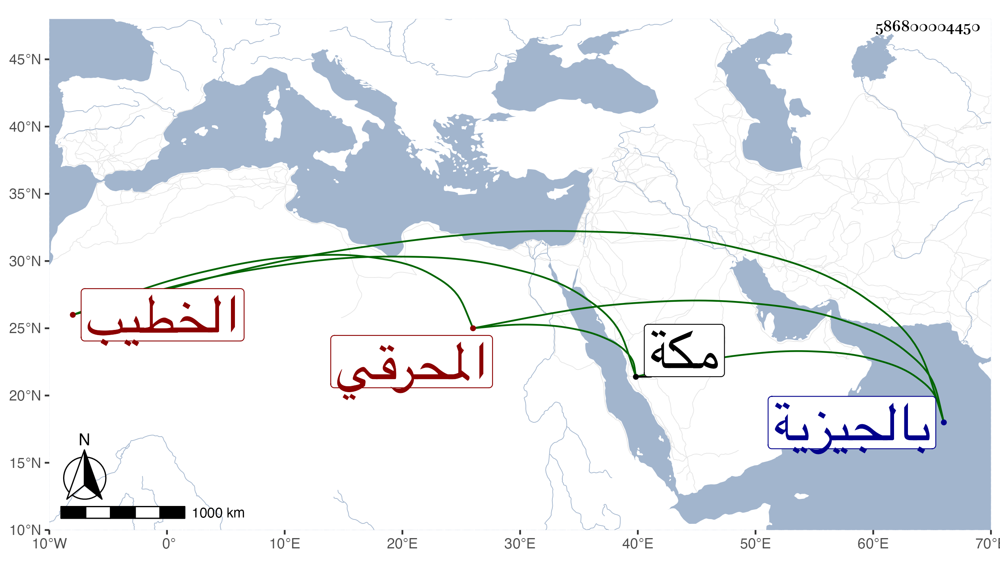

0902Sakhawi.DawLamic.ITO20230111-ara1.EIS1600.586800004450
Biography ID: 586800004450
المحرقي بفتحتين ثم مهملة مشددة وقاف نسبة للمحرقة قرية بالجيزية فتح الدين أبو عبد الله محمد بن أبي بكر بن أيوب وابنه البدر أبو المكارم محمد وابناهما البهاء أبو الفضل أحمد الخطيب والمحب أبو البقا محمد المباشر وابن أولهما يحيى وابن ثانيهما فتح الدين أبو اليسر محمد وهما ممن قرأ علي وصدقة بن محمد بن صدقة وبنوه عبد القادر وعبد الرحيم ويونس ولثانيهم ابن يقال له أبو الفتح صار في هذه الأزمان يقرأ على العامة فوق الكراسي بالأزهر ثم بمكة وله قبول في ذلك عندهم وله في سنة ثمان وعشرين بضع وعشرون .
